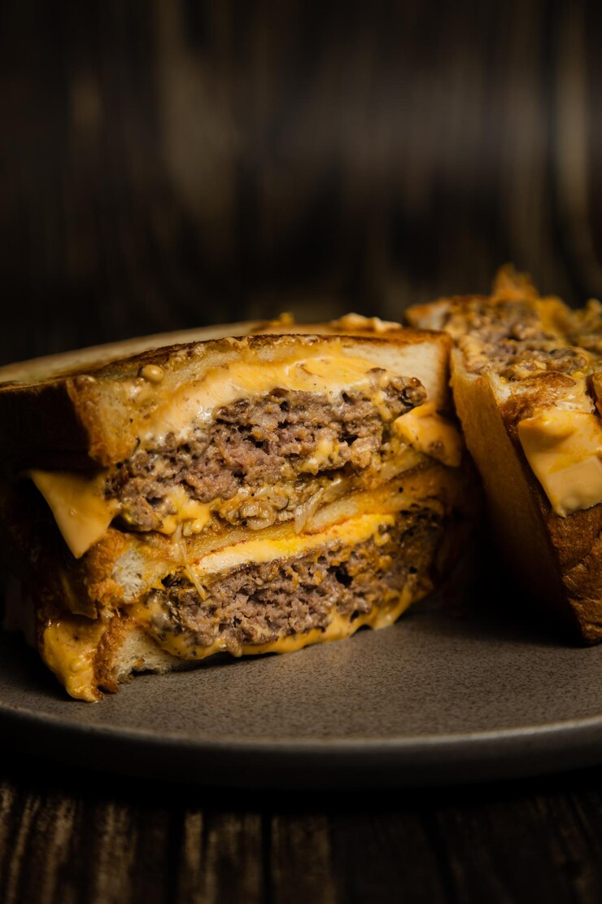

Home
Patty Melt

Description:
Learn how to make a basic patty melt with this quick and easy recipe.
I used Jewish rye bread but any bread will work as long as it's rye.
I double the cheese but feel free to use 1 slice per patty melt.
Ingredients
- 1 pound ground beef
- 1/2 teaspoon salt
- 1/4 teaspoon ground black pepper
- 2 tablespoon butter
- 1 large onion, sliced
- 6 teaspoon mayonnaise
- 6 slices rye bread
- 6 slices sharp cheddar cheese
Steps
- Season ground beef with salt and pepper; divide into 3 equal-sized balls. Shape each ball as close as possible to the shape of the bread. Make an indentation in the center of each patty with your thumb to help keep them flat while cooking.
- Melt butter in a skillet over medium heat. Add onion; cook and stir until soft and translucent, 5 to 7 minutes. Transfer onions into a bowl and set aside. Place beef patties into the same skillet and cook until desired doneness, 3 to 5 minutes per side.
- Meanwhile, spread 1 teaspoon of mayonnaise on one side of each slice of bread.
- Place 3 slices bread mayonnaise-side down in the skillet. Top each with 1 slice of cheese, 1 beef patty, 1/3 of the onions, a second slice of cheese, and another slice of bread, mayonnaise-side up. Cook bread until golden brown and cheese has started to melt, 3 to 4 minutes. Flip each sandwich over and cook an additional 3 to 4 minutes.